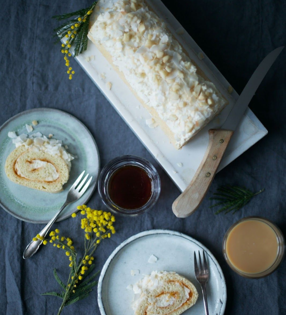
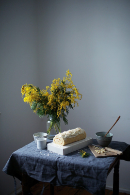
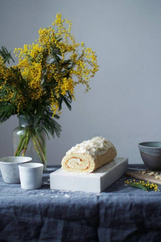
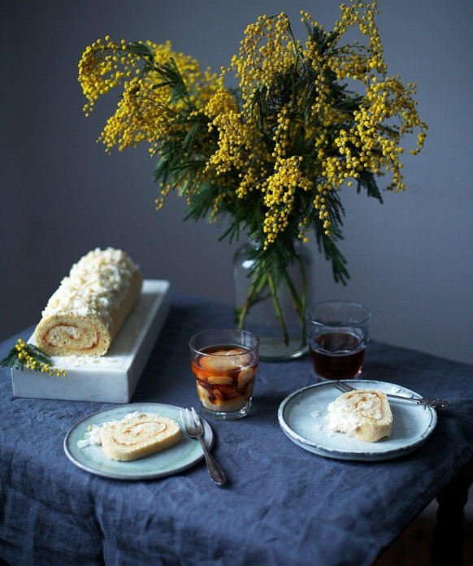

Today it's time for the last recipe, that we made for freunde von freunden's 'afternoon tea series'. We made our first swiss roll last spring and since then, we totally forgot to make one again.
I have no idea how that could happen, isn't a swiss roll just simply delicious?! Anyways, so here is finally a new swiss roll recipe - this time with apricot jelly, ginger, macadamia-cream and coconut flakes.



I think this is one of those recipes where you just can't believe that you are eating a gluten-free cake. I have this a lot of times when I eat Nora's recipes, I always can't believe, that I almost missed 3 years of eating cake, just because I thought it wouldn’t be possible to make a good gluten-free version. Now I'm more than happy, that Nora shows me that it works perfectly each time again and again and I'm sure you will love this cake as well!
We hope you have a lovely Easter weekend guys – we are going back to enjoy the sun in the garden now with a big piece of swiss roll 🙂